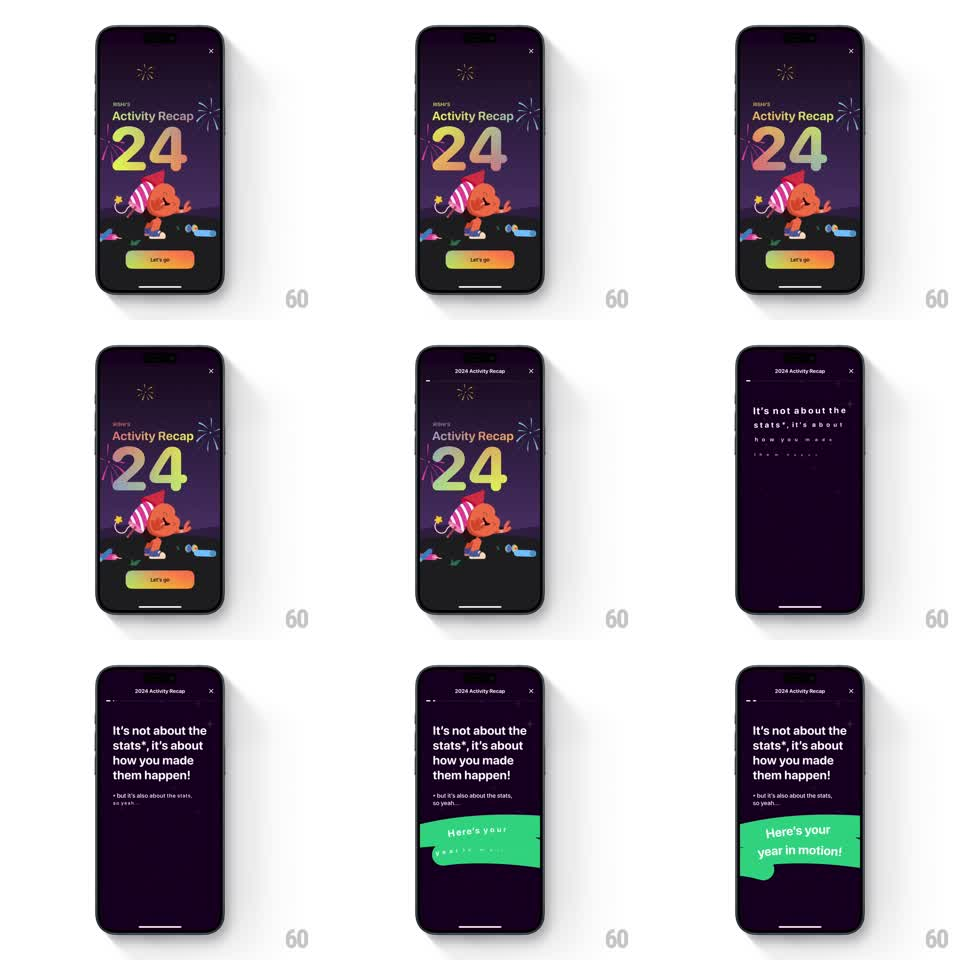

Media
Frame-by-frame

Rebuild this animation 1:1: Gentler Streak's recap intro - the party-hat mascot shivers with anticipation, and tapping Let's go launches a staggered transition into the story's first text card.

Rebuild this animation 1:1: Gentler Streak's recap intro - the party-hat mascot shivers with anticipation, and tapping Let's go launches a staggered transition into the story's first text card. ## Integration Integration: stack-agnostic spec - springs given as stiffness/damping, timed motions as duration + curve; map every value to your framework and animation library of choice. ## Scene Dark purple intro: sparkler accents, "2024 Activity Recap" title over giant gradient "24" numerals, the orange mascot in a party hat holding a noisemaker, and a gradient Let's go button. Second card: "It's not about the stats*, it's about how you made them happen!" with footnote, and a torn green sticker reading "Here's your year in motion!". ## Motion spec Pattern: idle anticipation then staggered exit, ~1.2s. - Idle: the mascot does an anticipation shiver (+-2deg rotation, 300ms bursts every 2s), sparkles twinkle in the corners, the "24" shimmers slowly (3s gradient sweep). - Tap Let's go: the button presses (scale 0.95, 100ms), then the intro elements exit in stagger - mascot slides down (300ms), title and numerals slide up (300ms), sparkles pop out. - The text card enters line by line: each line of the statement fades and rises (250ms, 10px, 120ms stagger), the footnote last at reduced opacity. - The green sticker whips in from the left with rotation (spring stiffness 320 damping 15), settling at its torn-paper tilt. ## Calibration - The exit stagger is fast and overlapping - it clears the stage, it does not say goodbye to each element. - The sticker is the beat's punchline; it lands after every text line is in place. ## Reduced motion Cards crossfade; sticker fades in flat. ## Don't miss - The "24" uses a green-to-red gradient fill - flat color loses the celebratory read. - The sticker's torn edge and slight rotation are the texture; a clean rectangle reads as a banner ad.